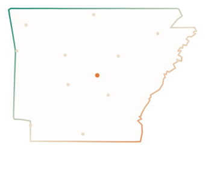

Statewide campaign infrastructure

Arkansas Campaign Data Cooperative
Better Data.
Better Organizing.
Better Campaigns.
An institutional stack for serious Arkansas campaigns: Electd for execution, L2 for enhanced voter intelligence, managed outreach when you need capacity—and private campaign relationships kept firewalled.
Operating capabilities
Each capability has its own page—built for decision-makers who need depth, not a brochure scroll.
Electd Platform
$149/month, no contract. Political OS: lists, CRM, canvassing, phones, email, SMS, voice, mail.
Platform brief →L2 Data Architecture
Identity, contact, districts, wealth, donors, automotive, digital IDs—plus HaystaqDNA models.
Data brief →HaystaqDNA Models
160+ issue, behavior, candidate, and turnout scores (0–100) for precision targeting.
Models brief →Data Cooperative
Published figures are minimum contributions. Metro areas 50,000+ pay county rate.
Terms →Managed Outreach
Full-service email 1.5¢ · SMS 2.8¢—executed on Electd.
Managed →Rate Card
Quoted Electd usage vs managed full-service, side by side.
Rates →Institutional partners
We package Arkansas organizing requirements with category-leading national infrastructure—and link you to the source for complete product documentation.
Electd — political operating system for strategy, CRM, and multi-channel outreach. electd.io · Our brief
L2 Data — 50+ years of enhanced voter & consumer intelligence. l2-data.com · Our brief · Data dictionary (PDF)
For campaigns that can invest more
Cooperative contribution amounts are the minimum required to keep statewide acquisition affordable for the broadest set of participants. If your campaign can contribute above the minimum, please do—additional support strengthens the file for everyone.